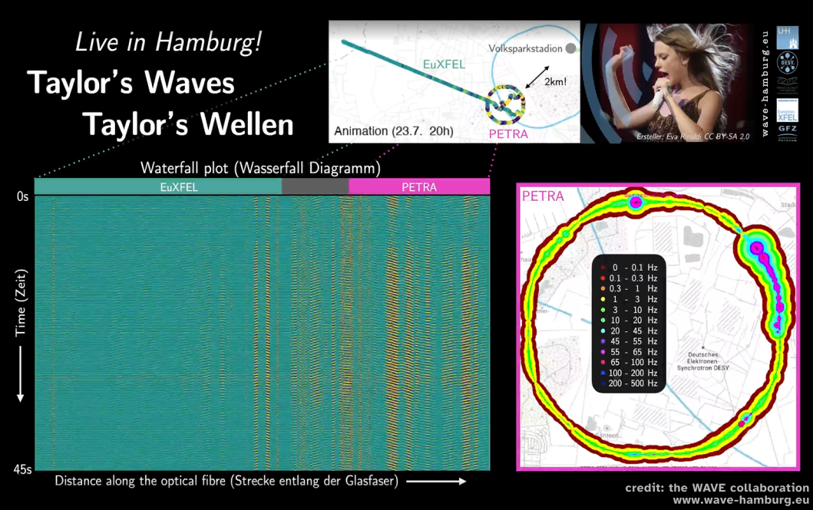
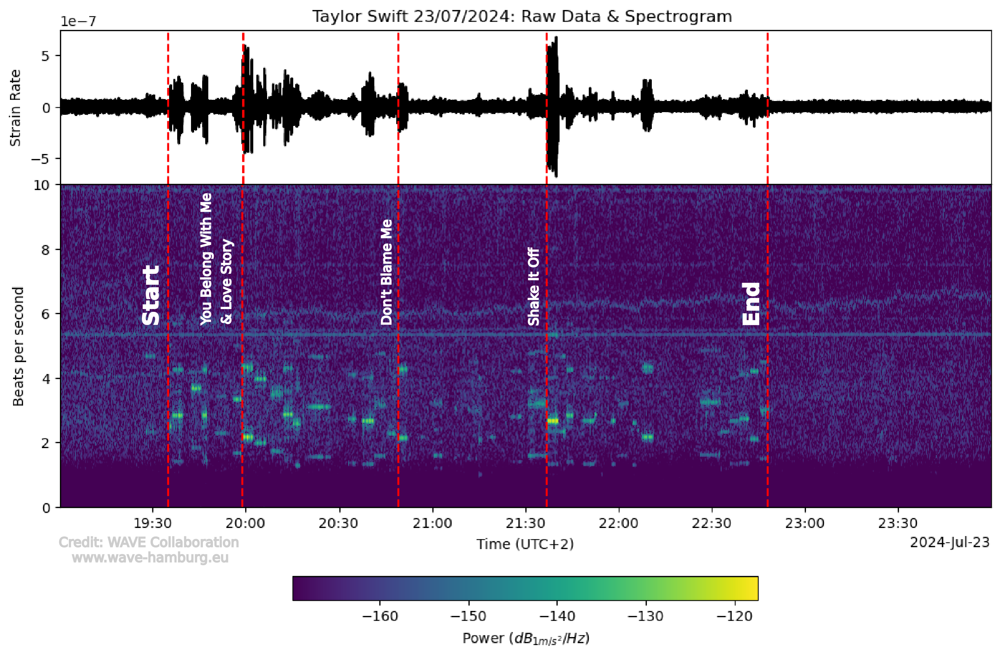

Image credit goes to "the WAVE team", map credit to mapbox.com.
Spectrogram of the Taylor Swift concert, with some songs annotated. The brighter yellow colors indicate stronger vibrations. The 'ladder structures' shift up and down with the beats per second of the song -- this is probably a result of the fans jumping to the beat, and with that, they generate specific frequencies.

Animation of seismic waves from Taylor Swift concert, projected onto a map Animation showing the waves that cross the campus at 8 pm. You can see how the waves even run through the entire tunnel of the European XFEL, that's 3.4 km of tunnel.
Animation of 1 minute seismic waves from Taylor Swift concert in a 'waterfall plot' These are the same waves as we show on the map, above. Horizontal = distance along the fiber, time runs past vertically.
Waterfall plot of one minute of signal around the time the first support band starts. You can clearly see how the overall amplitudes of the seismic signal become stronger (=more yellow) around 41 seconds.
And the animation of waves in the EuXFEL tunnel during "Shake it Off" on wednesday! Same colorscale as above, you can see that the waves during Shake it Off were really strong!
Spectrogram of the first 3 hours of the concert. Now time is on the horizontal axis, vertical is the different 'beats per second', or frequency. The first part is the support band, around 90 minutes Taylor Swift starts. Different songs have different rhythms, you can see the different vertical 'ladder' structures. You can also see that the fans kept their energy to dance to Taylor!